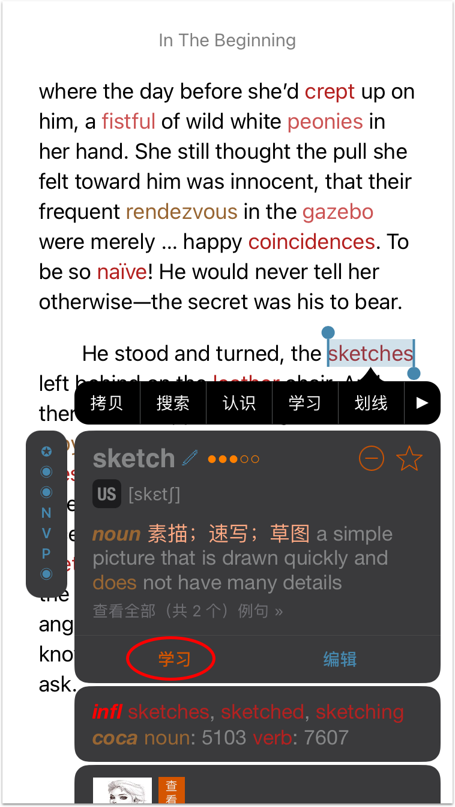
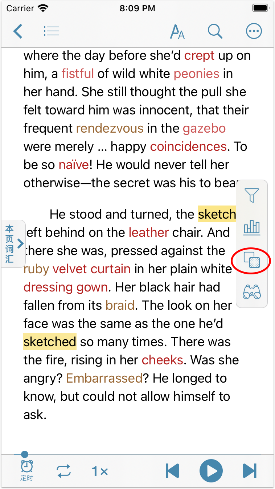
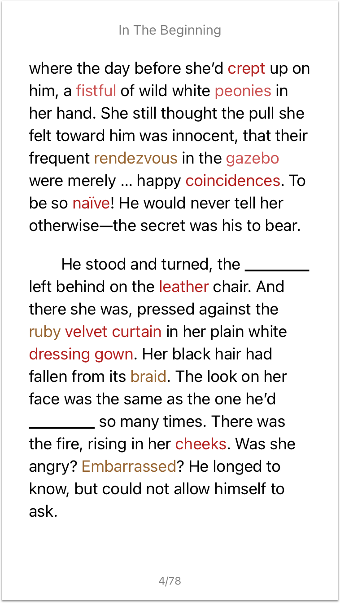
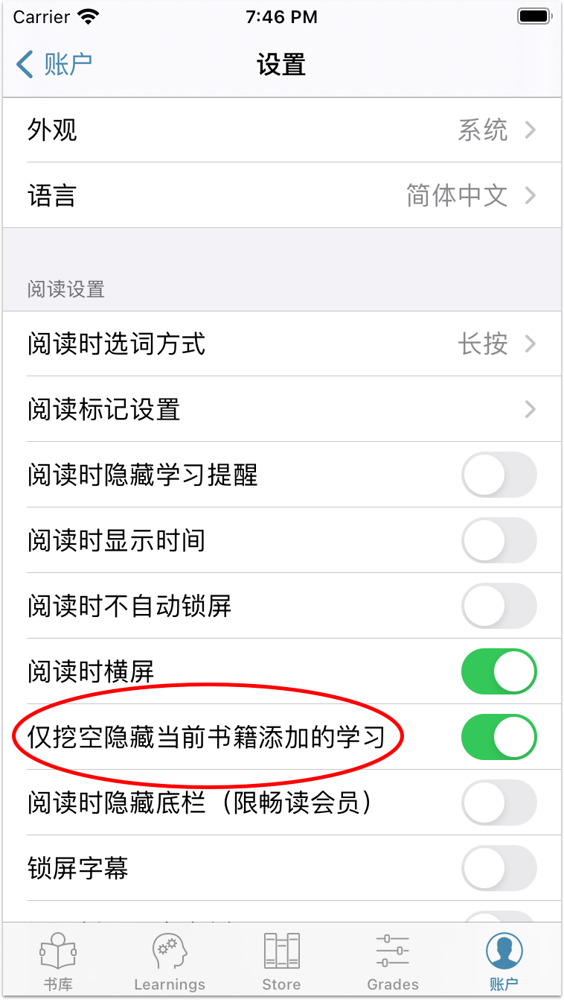

title: 挖空隱藏
使用挖空隱藏功能可以在閱讀書籍時將標記為學習的內容隱藏，並以下劃線的管道顯示，方便英語學習者做”挖空練習”。開啟【挖空隱藏】後，被用戶標記為學習的內容（包括單詞、短語和句子）會自動隱藏。點擊挖空的地方便可將學習恢復，方便測試和複習。
注意：【挖空隱藏】功能不支持PDF格式的書籍，並且需8.3.5及以上的聽閱版本。

如何使用【挖空隱藏】功能
挖空隱藏功能只適用於純文字書籍，比如epub、txt等。在閱讀書籍時，長按生詞打開單詞選單，點擊”學習”將單詞加入生詞表，然後點擊荧幕右側的圖標 即可開啟挖空隱藏功能。開啟後，單詞將被隱藏，並被底線代替。
即可開啟挖空隱藏功能。開啟後，單詞將被隱藏，並被底線代替。



如何僅挖空隱藏當前書籍添加的學習
默認情况，開啟【挖空隱藏】後，書中將隱藏所有正在學習的內容。您也可選擇只隱藏從當前書本中添加的學習，因為有些詞在別的書籍中可能有特殊含義，在當前書籍中卻只是一個普通的詞，比如of、in以及一些常見的多義詞。若需開啟，請到設定中打開開關”僅挖空隱藏當前書籍添加的學習”。
